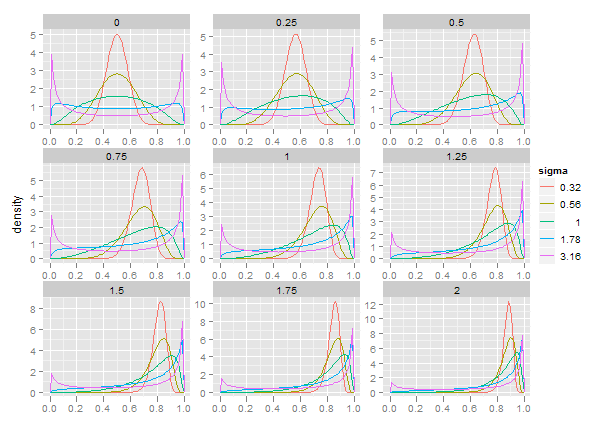
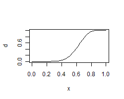
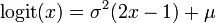

logitnorm
Utilities for the logitnormal distribution in R
- Density, distribution, quantile and random generation function.
- Estimation of the mode and the first two moments.
- Estimation of distribution parameters.
Download/Install
- from download page on R-Forge
- To install this package directly within R type:
install.packages("logitnorm", repos="http://R-Forge.R-project.org")
Documentaion
The package comes with documentaion and examples.
Within R type:
Distribution
The logitnormal distribution is useful as a prior density for variables that are bounded
between 0 and 1, such as proportions. Fig. 1 displays its density for various combinations of
parameters mu and sigma.

Fig. 1 Density for for various combinations of mu and sigma.
Example:
Plot the cumulative distribution

Mean and Variance
The moments have no analytical solution. This package estimates them
by numerical integration:
Example:
estimate mean and standard deviation.
Mode
The mode is found by setting derivatives to zero and optimizing
the resulting equation:

Example:
estimate the mode
0.664141601528398
Parameter Estimation
from upper quantile and
- mode (Maximum Likelihood Estimate)
- mean (Expected value)
- median
Example:
estimate the parameters, with mode 0.7 and upper quantile 0.9
References
Frederic, P. & Lad, F. (2008)
Two Moments of the Logitnormal Distribution.
Communications in Statistics-Simulation and Computation,
37, 1263-1269
Generated by sweave on: 2010-09-17.
The project summary page you can find here.